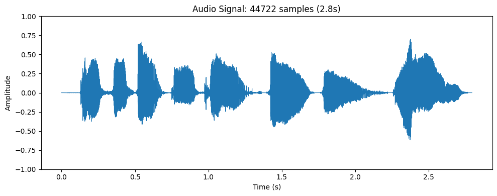
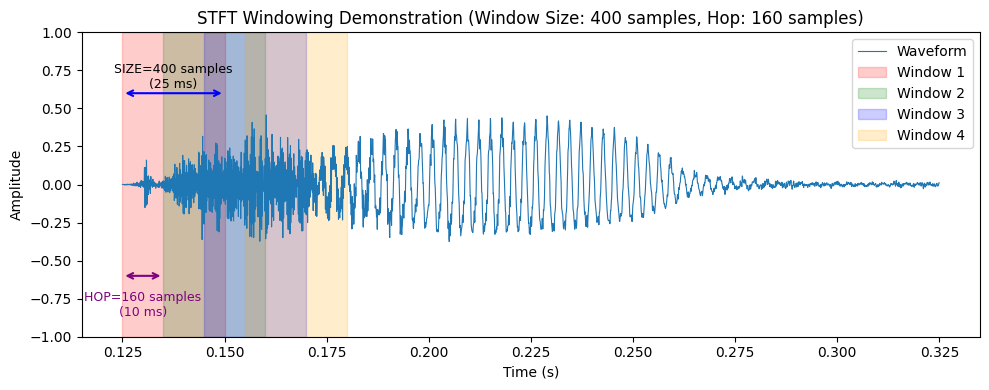
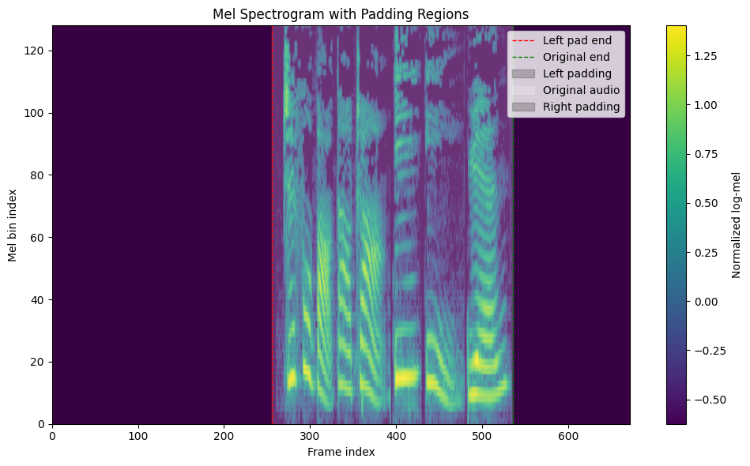

Step by Step Automatic Speech Recognition
Load Audio
import numpy as np
import soundfile as sf
import matplotlib.pyplot as plt
from IPython.display import Audio
# Audio Parameters
SAMPLE_RATE = 16000 # audio sample rates 16kHz, which is the default sample rate for most speech recognition models
FRAME_RATE = 12.5 # audio feature frame rates 12.5fps, i.e. 12.5 tokens per second or 16kHz/12.5 = 1280 samples/token
NUM_MEL_BINS = 128 # the number of mel bins
HOP_LENGTH = 160 # STFT hop length 160samples, i.e. 10ms (160/16000)
WINDOW_SIZE = 400 # STFT window size 400samples, i.e. 25ms(400/16000)
GLOBAL_LOG_MEL_MAX = 1.5 # log mel max for normalization
DOWNSAMPLE_FACTOR = 4 # downsample factor
# Load audio
wav_path = "test_speech.wav"
audio_array, sr = sf.read(wav_path, dtype='float32')
# Convert to mono if stereo or multi-channel
if audio_array.ndim > 1:
audio_array = audio_array.mean(axis=1)
# Resample to 16kHz if needed
if sr != SAMPLE_RATE:
import soxr
audio_array = soxr.resample(audio_array, sr, SAMPLE_RATE, quality="HQ")
time = np.arange(len(audio_array)) / SAMPLE_RATE
plt.figure(figsize=(10, 4))
plt.plot(time, audio_array, linewidth=0.8, label='Waveform')
plt.xlabel("Time (s)")
plt.ylabel("Amplitude")
plt.title(f"Audio Signal: {len(audio_array)} samples ({len(audio_array)/SAMPLE_RATE:.1f}s)")
plt.ylim(-1, 1)
plt.tight_layout()
plt.show()
display(Audio(audio_array, rate=sr))

Preprocess: STFT + Padding + Mel Spectrogram
STFT
# STFT Windowing Demonstration
# About STFT: https://www.bilibili.com/video/BV19hg4zGEYd/
start_time = 0.125
end_time = 0.325
start_sample = int(start_time * SAMPLE_RATE)
end_sample = int(end_time * SAMPLE_RATE)
segment = audio_array[start_sample:end_sample]
time = np.arange(len(segment)) / SAMPLE_RATE + start_time
num_windows = 4
first_window_start = start_sample
window_starts = [first_window_start + i * HOP_LENGTH for i in range(num_windows)]
window_ends = [ws + WINDOW_SIZE for ws in window_starts]
rel_starts = [ws - start_sample for ws in window_starts]
rel_ends = [we - start_sample for we in window_ends]
plt.figure(figsize=(10, 4))
plt.plot(time, segment, linewidth=0.8, label='Waveform')
colors = ['red', 'green', 'blue', 'orange']
for i, (rs, re) in enumerate(zip(rel_starts, rel_ends)):
t_start = start_time + rs / SAMPLE_RATE
t_end = start_time + re / SAMPLE_RATE
plt.axvspan(t_start, t_end, alpha=0.2, color=colors[i], label=f'Window {i+1}')
if i == 0:
mid_x = (t_start + t_end) / 2
plt.annotate('', xy=(t_start, 0.6), xytext=(t_end, 0.6),
arrowprops=dict(arrowstyle='<->', color='blue', lw=1.5))
plt.text(mid_x, 0.8, f'SIZE={WINDOW_SIZE} samples\n(25 ms)',
ha='center', va='top', fontsize=9)
if i < 1:
next_start = start_time + (rs + HOP_LENGTH) / SAMPLE_RATE
plt.annotate('', xy=(t_start, -0.6), xytext=(next_start, -0.6),
arrowprops=dict(arrowstyle='<->', color='purple', lw=1.5))
plt.text((t_start + next_start)/2, -0.7, f'HOP={HOP_LENGTH} samples\n(10 ms)',
ha='center', va='top', fontsize=9, color='purple')
plt.xlabel("Time (s)")
plt.ylabel("Amplitude")
plt.title(f"Audio Signal: {len(segment)} samples ({len(segment)/SAMPLE_RATE:.1f}s)")
plt.title(f'STFT Windowing Demonstration (Window Size: {WINDOW_SIZE} samples, Hop: {HOP_LENGTH} samples)')
plt.legend(loc='upper right')
plt.ylim(-1, 1)
plt.tight_layout()
plt.show()

Padding
import math
import numpy as np
# Streaming
N_LEFT_PAD_TOKENS = 32
TRANSCRIPTION_DELAY_MS = 480
# Special tokens - verified from mistral_common tokenizer
# These are the actual token IDs used by the model (NOT rank + base!)
TOKEN_BOS = 1 # <s>
TOKEN_EOS = 2 # </s>
TOKEN_STREAMING_PAD = 32 # [STREAMING_PAD]
TOKEN_BEGIN_AUDIO = 25 # [BEGIN_AUDIO]
TOKEN_AUDIO = 24 # [AUDIO]
RAW_AUDIO_LENGTH_PER_TOK = int(SAMPLE_RATE // FRAME_RATE) # 1280
AUDIO_LENGTH_PER_TOK = RAW_AUDIO_LENGTH_PER_TOK // HOP_LENGTH # 8
def num_delay_tokens():
delay_len = int(TRANSCRIPTION_DELAY_MS / 1000.0 * SAMPLE_RATE) # 7680
return num_audio_tokens(delay_len) # 6
def num_audio_tokens(audio_len):
if audio_len % HOP_LENGTH != 0:
audio_len = math.ceil(audio_len / HOP_LENGTH - 1)
else:
audio_len = audio_len // HOP_LENGTH
return math.ceil(audio_len / AUDIO_LENGTH_PER_TOK)
# (480ms / 1000)s delay * 16000Hz = 7680 samples delay
# 7680 / 160 = 48 mel frame delay -> Delay tokens = ceil(48/8) = 6 delay tokens
N_DELAY_TOKENS = num_delay_tokens() # 6
N_RIGHT_PAD_TOKENS = (N_DELAY_TOKENS + 1) + 10 # 17
# Audio streaming padding (from mistral_common AudioEncoder.pad)
def pad_audio_streaming(audio_array):
"""Pad audio for offline streaming mode (matching mistral_common AudioEncoder.pad).
Offline streaming: left pad + right pad (align + n_right_pad_tokens).
Audio is aligned to raw_audio_length_per_tok (1280 samples).
"""
mult_of = RAW_AUDIO_LENGTH_PER_TOK # 1280
# Right pad: align to mult_of + n_right_pad_tokens extra
n_samples = len(audio_array)
align_pad = (mult_of - (n_samples % mult_of)) % mult_of
right_pad = align_pad + N_RIGHT_PAD_TOKENS * mult_of # 17 * 1280 = 21760
# Left pad: n_left_pad_tokens * mult_of
left_pad = N_LEFT_PAD_TOKENS * mult_of # 32 * 1280 = 40960
return np.pad(audio_array, (left_pad, right_pad))
# Streaming-format prefix + offline audio padding (self-contained).
# Prefix tokens: [BOS] + [STREAMING_PAD]*(n_left_pad_tokens + n_delay_tokens) (len=39 by default)
prompt_ids = [TOKEN_BOS] + [TOKEN_STREAMING_PAD] * (N_LEFT_PAD_TOKENS + N_DELAY_TOKENS)
padded = pad_audio_streaming(audio_array).astype(np.float32)
print(f"Tokenizer OFFLINE: prompt_len={len(prompt_ids)} unique={sorted(set(prompt_ids))}",)
print(f"Audio padded: {len(padded)} samples ({len(padded)/SAMPLE_RATE:.1f}s)")
Tokenizer OFFLINE: prompt_len=39 unique=[1, 32]
Audio padded: 107520 samples (6.7s)
Mel Spectrogram
import torch
# Mel filter bank (Slaney-style, from mistral_common/audio.py)
def hertz_to_mel(freq):
"""
Convert frequency from Hertz to Mel scale using a piecewise linear/log formula.
Below 1000 Hz, it's linear: mel = 3 * freq / 200.
Above 1000 Hz, it's logarithmic: mel = 15 + 27 * log(freq/1000) / log(6.4).
This is the Slaney-style Mel scale, often used in audio processing.
"""
min_log_hertz = 1000.0
min_log_mel = 15.0
logstep = 27.0 / np.log(6.4)
mels = 3.0 * freq / 200.0
if isinstance(freq, np.ndarray):
log_region = freq >= min_log_hertz
mels[log_region] = min_log_mel + np.log(freq[log_region] / min_log_hertz) * logstep
elif freq >= min_log_hertz:
mels = min_log_mel + np.log(freq / min_log_hertz) * logstep
return mels
def mel_to_hertz(mels):
"""
Inverse of hertz_to_mel: convert from Mel scale back to Hertz.
Linear region below 15 Mel, logarithmic above.
"""
min_log_hertz = 1000.0
min_log_mel = 15.0
logstep = np.log(6.4) / 27.0
freq = 200.0 * mels / 3.0
log_region = mels >= min_log_mel
freq[log_region] = min_log_hertz * np.exp(logstep * (mels[log_region] - min_log_mel))
return freq
def compute_mel_filters():
"""
Compute a Mel filterbank matrix of shape (num_frequency_bins, num_mel_bins).
- num_frequency_bins: number of FFT bins (1 + WINDOW_SIZE//2), e.g., 201 for WINDOW_SIZE=400.
- num_mel_bins: number of Mel bands (e.g., 128).
The filterbank is triangular on the Mel scale, with peak normalization (enorm) so that each filter sums to 1.
Returns a numpy array of shape (201, 128).
"""
num_frequency_bins = 1 + WINDOW_SIZE // 2 # e.g., 201 for window size 400 Nyquist frequency
fft_freqs = np.linspace(0, SAMPLE_RATE // 2, num_frequency_bins)
# Determine Mel points equally spaced on the Mel scale (including edges)
mel_min = hertz_to_mel(0.0)
mel_max = hertz_to_mel(8000.0)
mel_freqs = np.linspace(mel_min, mel_max, NUM_MEL_BINS + 2)
filter_freqs = mel_to_hertz(mel_freqs)
filter_diff = np.diff(filter_freqs)
slopes = np.expand_dims(filter_freqs, 0) - np.expand_dims(fft_freqs, 1)
down_slopes = -slopes[:, :-2] / filter_diff[:-1]
up_slopes = slopes[:, 2:] / filter_diff[1:]
# The filter value at each frequency is the minimum of the down and up slopes, clipped to [0, 1]
fb = np.maximum(np.zeros(1), np.minimum(down_slopes, up_slopes))
# Normalize each filter to have area (sum) = 1 (enorm = 2 / (right_edge - left_edge) for triangular filters)
enorm = 2.0 / (filter_freqs[2:NUM_MEL_BINS+2] - filter_freqs[:NUM_MEL_BINS])
fb *= np.expand_dims(enorm, 0)
return fb # shape: (num_frequency_bins, num_mel_bins), e.g., (201, 128)
# Mel spectrogram (from vLLM voxtral.py compute_whisper_melspec)
def compute_mel_spectrogram(audio, mel_filters):
"""
Compute log-Mel spectrogram from a raw audio waveform.
Steps:
1. STFT with Hann window.
2. Power spectrum (magnitude squared).
3. Apply Mel filterbank (matrix multiplication) to map linear frequency bins to Mel bands.
4. Convert to log scale (log10) with a lower bound clamp.
5. Normalize with global statistics (or fallback to dynamic range) and scale to [0,1] range.
Args:
audio: 1D tensor of audio samples.
mel_filters: Tensor of shape (num_frequency_bins, num_mel_bins) from compute_mel_filters().
Returns:
mel_spec: Tensor of shape (num_mel_bins, num_frames) after normalization.
"""
# STFT: returns complex tensor of shape (num_frequency_bins, num_frames) typically.
# Note: torch.stft with return_complex=True yields shape (..., freq, frame)
window = torch.hann_window(WINDOW_SIZE)
stft = torch.stft(audio, WINDOW_SIZE, HOP_LENGTH, window=window, return_complex=True)
# Take magnitude squared (power spectrum).
# stft[..., :-1] might be intended to drop the last frequency bin (Nyquist) to align dimensions,
# but if mel_filters was built for all bins (including Nyquist), this could cause a mismatch.
# Assuming mel_filters has shape (201,128) and stft has 201 bins, then stft[..., :-1] would be (200,...).
# The following multiplication with mel_filters.T (128,201) would fail.
# Possibly the original code expected stft to have one extra bin that is dropped.
# We'll keep the original line as is, but note the potential issue.
magnitudes = stft[..., :-1].abs() ** 2
mel_spec = mel_filters.T @ magnitudes # [mel_bins, frames]
log_spec = torch.clamp(mel_spec, min=1e-10).log10()
# Use fixed global_log_mel_max from params.json (matching vLLM compute_whisper_melspec
# which uses config.global_log_mel_max when set, falling back to dynamic max otherwise)
log_spec = torch.maximum(log_spec, torch.tensor(GLOBAL_LOG_MEL_MAX) - 8.0)
log_spec = (log_spec + 4.0) / 4.0
return log_spec # (num_mel_bins, num_frames) [128, frames]
# Mel spectrogram
mel_filters = torch.tensor(compute_mel_filters(), dtype=torch.float32)
audio_tensor = torch.tensor(padded, dtype=torch.float32)
mel = compute_mel_spectrogram(audio_tensor, mel_filters)
print(f"Mel: {mel.shape[1]} frames")
# Truncate left if not divisible by 2 (conv stride)
if mel.shape[1] % 2 != 0:
mel = mel[:, 1:]
print(f"Mel truncated to {mel.shape[1]} frames")
Mel: 672 frames
Visualization
import matplotlib.pyplot as plt
mel_np = mel.numpy()
left_pad_frames = N_LEFT_PAD_TOKENS * AUDIO_LENGTH_PER_TOK # 32 * 8 = 256
right_pad_frames = N_RIGHT_PAD_TOKENS * AUDIO_LENGTH_PER_TOK # 17 * 8 = 136
total_frames = mel_np.shape[1] # 672
original_frames = total_frames - left_pad_frames - right_pad_frames # 672-256-136 = 280
fig, ax = plt.subplots(figsize=(10, 6))
im = ax.imshow(mel_np, aspect='auto', origin='lower', cmap='viridis',
extent=[0, total_frames, 0, NUM_MEL_BINS])
plt.colorbar(im, ax=ax, label='Normalized log-mel')
# Vertical lines
ax.axvline(x=left_pad_frames, color='red', linestyle='--', linewidth=1, label='Left pad end')
ax.axvline(x=left_pad_frames + original_frames, color='green', linestyle='--', linewidth=1, label='Original end')
# Background
ax.axvspan(0, left_pad_frames, alpha=0.2, color='black', label='Left padding')
ax.axvspan(left_pad_frames, left_pad_frames + original_frames, alpha=0.2, color='white', label='Original audio')
ax.axvspan(left_pad_frames + original_frames, total_frames, alpha=0.2, color='black', label='Right padding')
ax.set_xlabel('Frame index')
ax.set_ylabel('Mel bin index')
ax.set_title('Mel Spectrogram with Padding Regions')
ax.legend(loc='upper right')
plt.tight_layout()
plt.show()

Voxtral Model
import os
from safetensors import safe_open
# Load weights
model_dir = "voxtral-model"
sf_path = os.path.join(model_dir, "consolidated.safetensors")
print(f"Loading model from {sf_path}")
sf_file = safe_open(sf_path, framework="pt")
Loading model from voxtral-model\consolidated.safetensors
Encoder
# ============================================================================
# Config (from params.json)
# ============================================================================
import torch.nn as nn
import torch.nn.functional as F
# Encoder
ENC_DIM = 1280
ENC_LAYERS = 32
ENC_HEADS = 32
ENC_HEAD_DIM = 64
ENC_HIDDEN = 5120
ENC_KV_HEADS = 32
ENC_WINDOW = 750
ENC_NORM_EPS = 1e-5
ENC_ROPE_THETA = 1_000_000.0
# Use bfloat16 for computation (like vLLM)
USE_BF16 = False
# Decoder
DEC_DIM = 3072
DEC_LAYERS = 26
DEC_HEADS = 32
DEC_HEAD_DIM = 128
DEC_HIDDEN = 9216
DEC_KV_HEADS = 8
DEC_WINDOW = 8192
DEC_NORM_EPS = 1e-5
DEC_ROPE_THETA = 1_000_000.0
VOCAB_SIZE = 131072
# ============================================================================
# Weight loading helpers
# ============================================================================
def get_weight(sf_file, name):
t = sf_file.get_tensor(name)
if t.dtype == torch.bfloat16:
t = t.float()
return t
def get_weight_optional(sf_file, name):
try:
return get_weight(sf_file, name)
except:
return None
def permute_qk_weight(w, n_heads, head_dim):
"""Permute wq/wk weights from Mistral format to interleaved RoPE format.
Mistral consolidated.safetensors stores Q/K weights assuming split-half RoPE.
This permutes them for interleaved RoPE (is_neox_style=False).
w: [n_heads * head_dim, hidden_size]
"""
attn_in = n_heads * head_dim
attn_out = w.shape[1]
# Reshape to [n_heads, head_dim/2, 2, hidden_size]
# Then transpose to [n_heads, 2, head_dim/2, hidden_size]
# This interleaves: [even_dims, odd_dims] -> [dim0, dim1, dim2, dim3, ...]
return (
w.view(n_heads, head_dim // 2, 2, attn_out)
.transpose(1, 2)
.reshape(attn_in, attn_out)
)
def permute_qk_bias(b, n_heads, head_dim):
"""Permute wq/wk bias to match the weight permutation."""
attn_in = n_heads * head_dim
return (
b.view(n_heads, head_dim // 2, 2)
.transpose(1, 2)
.reshape(attn_in)
)
# ============================================================================
# Causal Conv1d (from whisper_causal.py)
# ============================================================================
def causal_conv1d(x, weight, bias, stride):
"""x: [1, C_in, L], weight: [C_out, C_in, K], returns [1, C_out, L']"""
kernel_size = weight.shape[2]
effective_ks = kernel_size # dilation=1
padding_total = effective_ks - stride
n_frames = (x.shape[-1] - effective_ks + padding_total) / stride + 1
target_length = (math.ceil(n_frames) - 1) * stride + (effective_ks - padding_total)
extra_padding = int(target_length - x.shape[-1])
x = F.pad(x, (padding_total, extra_padding), mode='constant')
return F.conv1d(x, weight, bias, stride=stride)
# ============================================================================
# RoPE
# ============================================================================
def compute_rope_freqs(positions, head_dim, theta):
"""positions: [seq_len] int tensor. Returns cos, sin each [seq_len, head_dim/2]."""
freqs = 1.0 / (theta ** (torch.arange(0, head_dim, 2).float() / head_dim))
angles = positions.float().unsqueeze(-1) * freqs.unsqueeze(0) # [seq, hd/2]
return torch.cos(angles), torch.sin(angles)
def apply_rope(x, cos_f, sin_f, n_heads, head_dim, is_neox_style=False):
"""x: [seq, n_heads*head_dim].
is_neox_style=False: Interleaved (GPT-J), pairs (0,1), (2,3), ...
is_neox_style=True: Split halves (NeoX), first half, second half
"""
seq_len = x.shape[0]
x = x.view(seq_len, n_heads, head_dim)
cos_f = cos_f.unsqueeze(1) # [seq, 1, hd/2]
sin_f = sin_f.unsqueeze(1)
if is_neox_style:
# NeoX style: split into halves
x1, x2 = x.chunk(2, dim=-1)
o1 = x1 * cos_f - x2 * sin_f
o2 = x2 * cos_f + x1 * sin_f
out = torch.cat([o1, o2], dim=-1)
else:
# Interleaved: pairs (0,1), (2,3), (4,5), ...
x1 = x[..., ::2] # even indices
x2 = x[..., 1::2] # odd indices
o1 = x1 * cos_f - x2 * sin_f
o2 = x2 * cos_f + x1 * sin_f
# Interleave back: stack and flatten
out = torch.stack([o1, o2], dim=-1).flatten(-2)
return out.view(seq_len, n_heads * head_dim)
# ============================================================================
# Causal Attention
# ============================================================================
def causal_attention(q, k, v, n_heads, n_kv_heads, head_dim, window,
q_start_pos=0, kv_start_pos=0):
"""
q: [seq_q, n_heads*head_dim] (queries at absolute positions q_start_pos + i)
k: [seq_kv, n_kv_heads*head_dim] (keys at absolute positions kv_start_pos + j)
v: [seq_kv, n_kv_heads*head_dim]
Returns: [seq_q, n_heads*head_dim]
"""
seq_q = q.shape[0]
seq_kv = k.shape[0]
gqa_ratio = n_heads // n_kv_heads
orig_dtype = q.dtype
# Reshape to [batch, n_heads, seq, head_dim] for scaled_dot_product_attention
q = q.view(seq_q, n_heads, head_dim).transpose(0, 1).unsqueeze(0) # [1, nh, sq, hd]
k = k.view(seq_kv, n_kv_heads, head_dim).transpose(0, 1).unsqueeze(0) # [1, nkv, skv, hd]
v = v.view(seq_kv, n_kv_heads, head_dim).transpose(0, 1).unsqueeze(0)
# Expand KV heads for GQA
if gqa_ratio > 1:
k = k.repeat_interleave(gqa_ratio, dim=1) # [1, nh, skv, hd]
v = v.repeat_interleave(gqa_ratio, dim=1)
# Create causal mask with sliding window
# qi_abs: [sq, 1], kv_abs: [1, skv]
qi_abs = (q_start_pos + torch.arange(seq_q)).unsqueeze(1) # [sq, 1]
kv_abs = (kv_start_pos + torch.arange(seq_kv)).unsqueeze(0) # [1, skv]
# attend if kv_abs <= qi_abs AND kv_abs >= qi_abs - (window-1)
attn_mask = (kv_abs <= qi_abs) & (kv_abs >= (qi_abs - (window - 1)))
# Use PyTorch's flash attention (if available) via scaled_dot_product_attention
out = F.scaled_dot_product_attention(
q.float(), k.float(), v.float(),
attn_mask=attn_mask.unsqueeze(0).unsqueeze(0), # [1, 1, sq, skv]
scale=1.0 / math.sqrt(head_dim),
dropout_p=0.0,
).to(orig_dtype)
# Reshape back to [seq_q, n_heads*head_dim]
return out.squeeze(0).transpose(0, 1).contiguous().view(seq_q, n_heads * head_dim)
# ============================================================================
# RMSNorm
# ============================================================================
class RMSNorm(nn.Module):
def __init__(self, weight, eps=1e-5):
super().__init__()
self.weight = weight
self.eps = eps
def forward(self, x):
rms = torch.rsqrt(x.float().pow(2).mean(-1, keepdim=True) + self.eps)
return (x.float() * rms * self.weight).to(x.dtype)
# ============================================================================
# Encoder forward
# ============================================================================
def encoder_forward(mel, weights):
"""mel: [128, frames] -> [seq, 1280]"""
prefix = "mm_streams_embeddings.embedding_module.whisper_encoder"
# Conv stem
mel_3d = mel.unsqueeze(0) # [1, 128, frames]
conv0_w = get_weight(sf_file, f"{prefix}.conv_layers.0.conv.weight")
conv0_b = get_weight(sf_file, f"{prefix}.conv_layers.0.conv.bias")
conv1_w = get_weight(sf_file, f"{prefix}.conv_layers.1.conv.weight")
conv1_b = get_weight(sf_file, f"{prefix}.conv_layers.1.conv.bias")
h = F.gelu(causal_conv1d(mel_3d, conv0_w, conv0_b, stride=1))
h = F.gelu(causal_conv1d(h, conv1_w, conv1_b, stride=2))
h = h.squeeze(0).transpose(0, 1) # [seq, 1280]
conv_len = h.shape[0]
# Left-truncate conv output to multiple of DOWNSAMPLE_FACTOR (matching vLLM realtime)
# This ensures encoder output divides evenly for the adapter reshape
trunc = conv_len % DOWNSAMPLE_FACTOR
if trunc > 0:
h = h[trunc:]
seq_len = h.shape[0]
print(f" Conv stem: {mel.shape[1]} frames -> {conv_len}, left-trunc {trunc} -> {seq_len}")
# Transformer layers
positions = torch.arange(seq_len)
rope_cos, rope_sin = compute_rope_freqs(positions, ENC_HEAD_DIM, ENC_ROPE_THETA)
for layer in range(ENC_LAYERS):
lp = f"{prefix}.transformer.layers.{layer}"
# Pre-attention norm
attn_norm_w = get_weight(sf_file, f"{lp}.attention_norm.weight")
norm = RMSNorm(attn_norm_w, ENC_NORM_EPS)
x_norm = norm(h)
# Q, K, V (encoder: MHA with biases on q, v, o; no bias on k)
wq = get_weight(sf_file, f"{lp}.attention.wq.weight")
wq_b = get_weight(sf_file, f"{lp}.attention.wq.bias")
wk = get_weight(sf_file, f"{lp}.attention.wk.weight")
wv = get_weight(sf_file, f"{lp}.attention.wv.weight")
wv_b = get_weight(sf_file, f"{lp}.attention.wv.bias")
wo = get_weight(sf_file, f"{lp}.attention.wo.weight")
wo_b = get_weight(sf_file, f"{lp}.attention.wo.bias")
# Encoder: NO weight permutation, use is_neox_style=False (per whisper_causal.py)
q = F.linear(x_norm, wq, wq_b) # [seq, 2048]
k = F.linear(x_norm, wk) # [seq, 2048] no bias
v = F.linear(x_norm, wv, wv_b) # [seq, 2048]
# RoPE - encoder uses is_neox_style=False (interleaved) without weight permutation
q = apply_rope(q, rope_cos, rope_sin, ENC_HEADS, ENC_HEAD_DIM, is_neox_style=False)
k = apply_rope(k, rope_cos, rope_sin, ENC_KV_HEADS, ENC_HEAD_DIM, is_neox_style=False)
# Attention
attn_out = causal_attention(q, k, v, ENC_HEADS, ENC_KV_HEADS, ENC_HEAD_DIM, ENC_WINDOW)
# Output projection + residual
h = h + F.linear(attn_out, wo, wo_b)
# FFN
ffn_norm_w = get_weight(sf_file, f"{lp}.ffn_norm.weight")
ffn_norm = RMSNorm(ffn_norm_w, ENC_NORM_EPS)
x_norm = ffn_norm(h)
w1 = get_weight(sf_file, f"{lp}.feed_forward.w1.weight")
w2 = get_weight(sf_file, f"{lp}.feed_forward.w2.weight")
w2_b = get_weight(sf_file, f"{lp}.feed_forward.w2.bias")
w3 = get_weight(sf_file, f"{lp}.feed_forward.w3.weight")
# SwiGLU: silu(gate) * up, then down
gate = F.silu(F.linear(x_norm, w1)) # no bias
up = F.linear(x_norm, w3) # no bias
h = h + F.linear(gate * up, w2, w2_b) # bias on w2
if (layer + 1) % 8 == 0:
print(f" Encoder layer {layer+1}/{ENC_LAYERS}")
# Final norm
final_norm_w = get_weight(sf_file, f"{prefix}.transformer.norm.weight")
final_norm = RMSNorm(final_norm_w, ENC_NORM_EPS)
h = final_norm(h)
print(f" Encoder final: min={h.min():.4f}, max={h.max():.4f}, mean={h.mean():.4f}")
return h # [seq, 1280]
# Encoder
print("Running encoder...")
with torch.no_grad():
enc_out = encoder_forward(mel, None)
print(f"Encoder output: {enc_out.shape}")
Running encoder...
Conv stem: 672 frames -> 336, left-trunc 0 -> 336
Encoder layer 8/32
Encoder layer 16/32
Encoder layer 24/32
Encoder layer 32/32
Encoder final: min=-10.2434, max=11.2043, mean=0.0032
Encoder output: torch.Size([336, 1280])
Adapter
# ============================================================================
# Adapter forward
# ============================================================================
def adapter_forward(enc_out, sf_file):
"""enc_out: [seq, 1280] -> [seq/4, 3072]. seq must be multiple of 4."""
prefix = "mm_streams_embeddings.embedding_module"
w0 = get_weight(sf_file, f"{prefix}.audio_language_projection.0.weight")
w1 = get_weight(sf_file, f"{prefix}.audio_language_projection.2.weight")
seq_len = enc_out.shape[0]
assert seq_len % DOWNSAMPLE_FACTOR == 0, f"Encoder output {seq_len} not divisible by {DOWNSAMPLE_FACTOR}"
# Reshape: [seq, 1280] -> [seq/4, 5120]
ds = enc_out.reshape(seq_len // DOWNSAMPLE_FACTOR, ENC_DIM * DOWNSAMPLE_FACTOR)
# MLP: Linear(5120->3072) -> GELU -> Linear(3072->3072)
out = F.gelu(F.linear(ds, w0))
out = F.linear(out, w1)
print(f" Adapter: {seq_len} -> {out.shape[0]} (downsample {DOWNSAMPLE_FACTOR}x)")
return out # [seq/4, 3072]
# Adapter (no normalization - matches vendor code)
print("Running adapter...")
with torch.no_grad():
adapter_out = adapter_forward(enc_out, sf_file)
print(f"Adapter output: {adapter_out.shape}")
Running adapter...
Adapter: 336 -> 84 (downsample 4x)
Adapter output: torch.Size([84, 3072])
Decoder
# ============================================================================
# Decoder forward (prefill + generation)
# ============================================================================
class Decoder:
def __init__(self, sf_file):
self.sf = sf_file
self.dtype = torch.bfloat16 if USE_BF16 else torch.float32
self.tok_embeddings = get_weight(sf_file,
"mm_streams_embeddings.embedding_module.tok_embeddings.weight")
self.final_norm = get_weight(sf_file, "norm.weight")
self.kv_cache = {} # layer -> (k_cache, v_cache)
# Preload layer weights
self.layers = []
for i in range(DEC_LAYERS):
layer = self._load_layer(i)
self.layers.append(layer)
if (i + 1) % 8 == 0:
print(f" Decoder layer {i+1}/{DEC_LAYERS} loaded")
if USE_BF16:
print(f" Using bfloat16 computation")
def _load_layer(self, i):
sf = self.sf
lp = f"layers.{i}"
dtype = self.dtype
# No Q/K permutation needed: safetensors weights are in interleaved format
# (consecutive pairs form RoPE rotation pairs), matching is_neox_style=False.
# Verified equivalent to vLLM's maybe_remap_mistral + is_neox_style=True.
# Large weights in compute dtype, norms stay float32
return {
'attention_norm': get_weight(sf, f"{lp}.attention_norm.weight"), # f32 for precision
'ffn_norm': get_weight(sf, f"{lp}.ffn_norm.weight"), # f32 for precision
'wq': get_weight(sf, f"{lp}.attention.wq.weight").to(dtype),
'wk': get_weight(sf, f"{lp}.attention.wk.weight").to(dtype),
'wv': get_weight(sf, f"{lp}.attention.wv.weight").to(dtype),
'wo': get_weight(sf, f"{lp}.attention.wo.weight").to(dtype),
'w1': get_weight(sf, f"{lp}.feed_forward.w1.weight").to(dtype),
'w2': get_weight(sf, f"{lp}.feed_forward.w2.weight").to(dtype),
'w3': get_weight(sf, f"{lp}.feed_forward.w3.weight").to(dtype),
# ada_rms_norm_t_cond: Linear(3072->32) -> GELU -> Linear(32->3072)
# Applied after ffn_norm, before FFN: h = h * (1 + ada_mlp(t_cond))
'ada_down': get_weight(sf, f"{lp}.ada_rms_norm_t_cond.0.weight").to(dtype), # [32, 3072]
'ada_up': get_weight(sf, f"{lp}.ada_rms_norm_t_cond.2.weight").to(dtype), # [3072, 32]
}
def embed_token(self, token_id):
return self.tok_embeddings[token_id]
def embed_tokens(self, token_ids):
"""Embed a batch of token IDs. token_ids: 1D tensor of ints."""
return self.tok_embeddings[token_ids]
def _layer_forward(self, h, layer_idx, pos, kv_seq_len, t_cond=None, debug=False):
"""Single layer forward for one or more positions.
t_cond: Time conditioning tensor from TimeEmbedding, shape [3072].
Applied via ada_rms_norm per layer: h = h * (1 + ada_mlp(t_cond))
"""
L = self.layers[layer_idx]
seq_len = h.shape[0]
dtype = self.dtype
# Convert input to bf16 if needed
if USE_BF16 and h.dtype != dtype:
h = h.to(dtype)
if debug:
print(f" Layer {layer_idx} input: [{h.float().min():.2f}, {h.float().max():.2f}]")
# Pre-attention RMSNorm (always in float32 for precision)
norm = RMSNorm(L['attention_norm'], DEC_NORM_EPS)
x_norm = norm(h)
if USE_BF16:
x_norm = x_norm.to(dtype)
if debug:
print(f" After attn_norm: [{x_norm.float().min():.2f}, {x_norm.float().max():.2f}]")
# Q, K, V (no bias in decoder)
q = F.linear(x_norm, L['wq']) # [seq, 4096]
k = F.linear(x_norm, L['wk']) # [seq, 1024]
v = F.linear(x_norm, L['wv']) # [seq, 1024]
# RoPE (in float32 for precision) - Interleaved style (is_neox_style=False)
# Mistral safetensors stores Q/K weights in interleaved format per head:
# consecutive pairs (q[2j], q[2j+1]) form RoPE rotation pairs.
# This is equivalent to vLLM's permuted + split-half approach (verified).
positions = torch.arange(pos, pos + seq_len)
rope_cos, rope_sin = compute_rope_freqs(positions, DEC_HEAD_DIM, DEC_ROPE_THETA)
q = apply_rope(q.float(), rope_cos, rope_sin, DEC_HEADS, DEC_HEAD_DIM, is_neox_style=False)
k = apply_rope(k.float(), rope_cos, rope_sin, DEC_KV_HEADS, DEC_HEAD_DIM, is_neox_style=False)
if USE_BF16:
q = q.to(dtype)
k = k.to(dtype)
# Update KV cache
if layer_idx not in self.kv_cache:
k_cache = k
v_cache = v
else:
k_cache, v_cache = self.kv_cache[layer_idx]
k_cache = torch.cat([k_cache, k], dim=0)
v_cache = torch.cat([v_cache, v], dim=0)
# Keep only last DEC_WINDOW positions
if k_cache.shape[0] > DEC_WINDOW:
k_cache = k_cache[-DEC_WINDOW:]
v_cache = v_cache[-DEC_WINDOW:]
self.kv_cache[layer_idx] = (k_cache, v_cache)
full_k, full_v = self.kv_cache[layer_idx]
# Attention
kv_start_pos = (pos + seq_len - 1) - (full_k.shape[0] - 1)
attn_out = causal_attention(
q, full_k, full_v,
DEC_HEADS, DEC_KV_HEADS, DEC_HEAD_DIM,
DEC_WINDOW,
q_start_pos=pos,
kv_start_pos=kv_start_pos,
)
# Output projection + residual
attn_proj = F.linear(attn_out, L['wo'])
if debug:
print(f" After attn proj: [{attn_proj.float().min():.2f}, {attn_proj.float().max():.2f}]")
h = h + attn_proj
if debug:
print(f" After attn residual: [{h.float().min():.2f}, {h.float().max():.2f}]")
# Pre-FFN RMSNorm
ffn_norm = RMSNorm(L['ffn_norm'], DEC_NORM_EPS)
h_norm = ffn_norm(h)
if USE_BF16:
h_norm = h_norm.to(dtype)
if debug:
print(f" After ffn_norm: [{h_norm.float().min():.2f}, {h_norm.float().max():.2f}]")
# Ada RMSNorm time conditioning (applied after ffn_norm, before FFN)
# h = h * (1 + ada_mlp(t_cond)) where ada_mlp = Linear(3072->32)->GELU->Linear(32->3072)
if t_cond is not None:
t_cond_bf16 = t_cond.to(dtype) if USE_BF16 else t_cond
ada_hidden = F.linear(t_cond_bf16, L['ada_down']) # [32]
ada_hidden = F.gelu(ada_hidden)
ada_scale = F.linear(ada_hidden, L['ada_up']) # [3072]
h_norm = h_norm * (1 + ada_scale.unsqueeze(0)) # broadcast over seq_len
if debug:
print(f" After ada_norm: [{h_norm.float().min():.2f}, {h_norm.float().max():.2f}]")
# SwiGLU FFN
gate = F.silu(F.linear(h_norm, L['w1']))
up = F.linear(h_norm, L['w3'])
ffn_out = F.linear(gate * up, L['w2'])
if debug:
print(f" FFN output: [{ffn_out.float().min():.2f}, {ffn_out.float().max():.2f}]")
h = h + ffn_out
if debug:
print(f" After FFN residual: [{h.float().min():.2f}, {h.float().max():.2f}]")
return h
def prefill(self, input_embeds, t_cond):
"""input_embeds: [seq, 3072], t_cond: [3072] from TimeEmbedding."""
self.kv_cache = {}
h = input_embeds
seq_len = h.shape[0]
if USE_BF16:
h = h.to(self.dtype)
for layer in range(DEC_LAYERS):
debug_this_layer = (layer < 2)
h = self._layer_forward(h, layer, 0, seq_len, t_cond=t_cond, debug=debug_this_layer)
if layer < 4 or (layer + 1) % 8 == 0:
print(f" Decoder prefill layer {layer+1}/{DEC_LAYERS}: h range [{h.float().min():.2f}, {h.float().max():.2f}]")
return h # [seq, 3072]
def forward_one(self, embed, pos, t_cond):
"""Generate one token. embed: [1, 3072], t_cond: [3072], returns logits [vocab]."""
h = embed.unsqueeze(0) if embed.dim() == 1 else embed
if USE_BF16:
h = h.to(self.dtype)
for layer in range(DEC_LAYERS):
h = self._layer_forward(h, layer, pos, pos + 1, t_cond=t_cond)
# Final norm (in float32)
norm = RMSNorm(self.final_norm, DEC_NORM_EPS)
h = norm(h)
# Logits via tied embeddings: h @ tok_embeddings^T
# Always compute logits in float32 for precision
logits = F.linear(h.float().squeeze(0), self.tok_embeddings)
return logits # [vocab]
# Load decoder
print("Loading decoder...")
decoder = Decoder(sf_file)
Loading decoder...
Decoder layer 8/26 loaded
Decoder layer 16/26 loaded
Decoder layer 24/26 loaded
TimeEmbedding
# ============================================================================
# TimeEmbedding (from voxtral_realtime.py)
# ============================================================================
def compute_time_embedding(t_value, dim, theta=10000.0):
"""Sinusoidal embedding of scalar t_value into dim-dimensional vector."""
half_dim = dim // 2
inv_freq = torch.exp(-math.log(theta) * torch.arange(half_dim).float() / half_dim)
emb = t_value * inv_freq
return torch.cat([emb.cos(), emb.sin()]) # [dim]
# Time conditioning (ada_rms_norm_t_cond)
# The decoder uses per-layer adaptive modulation based on `t_cond`.
t_cond = compute_time_embedding(float(N_DELAY_TOKENS), DEC_DIM)
print(f"Time conditioning: t={N_DELAY_TOKENS}, t_cond shape={t_cond.shape}")
Time conditioning: t=6, t_cond shape=torch.Size([3072])
vLLM realtime decoding schedule
# ----------------------------------------------------------------------
# Official vLLM realtime decoding schedule (offline WAV)
#
# - Prefix: prompt_ids (len=39 by default): BOS + STREAMING_PAD*(left_pad + delay)
# - Audio positions: one audio embedding per position (adapter_out), length N
# - Generation happens *within* the audio-token range:
# 1) Prefill positions [0..L-1] using (audio_embed[pos] + tok_embed(prompt_ids[pos]))
# 2) Sample next token from last prefix position (pos=L-1) -> token_L
# 3) For pos=L..N-1:
# feed (audio_embed[pos] + tok_embed(prev_token)) and sample next token
# stop on EOS
#
# This matches vLLM's requirement that a multimodal embedding exists at every step.
# ----------------------------------------------------------------------
n_audio = adapter_out.shape[0] # 84
L = len(prompt_ids) # 39
assert L > 0, L
assert L <= n_audio, (L, n_audio)
prompt_ids_t = torch.tensor(prompt_ids, dtype=torch.long)
prefix_text_embeds = decoder.embed_tokens(prompt_ids_t) # [L, 3072]
prefix_embeds = adapter_out[:L] + prefix_text_embeds
print(f" audio_tokens={n_audio}, prefix_tokens={L}")
print(
f" adapter_out stats: min={adapter_out.min():.4f}, max={adapter_out.max():.4f}, std={adapter_out.std():.4f}",
)
print(
f" prefix_embeds stats: min={prefix_embeds.min():.4f}, max={prefix_embeds.max():.4f}",
)
print("Running decoder prefill (prefix)...")
with torch.no_grad():
if L > 1:
_ = decoder.prefill(prefix_embeds[:-1], t_cond)
logits = decoder.forward_one(prefix_embeds[-1], pos=L - 1, t_cond=t_cond)
token = int(logits.argmax().item())
generated = [token]
print(f" Token 1 (after prefix): {token}")
print("Running decoder decode (within audio span)...")
with torch.no_grad():
for pos in range(L, n_audio):
if token == TOKEN_EOS:
break
embed = adapter_out[pos] + decoder.embed_token(token)
logits = decoder.forward_one(embed, pos=pos, t_cond=t_cond)
token = int(logits.argmax().item())
generated.append(token)
if len(generated) <= 5:
topk_vals, topk_idxs = torch.topk(logits, 5)
print(
f" Token {len(generated)} (pos={pos}): {token}, top5: {list(zip(topk_idxs.tolist(), topk_vals.tolist()))}"
)
print(f"Generated {len(generated)} tokens (raw)")
audio_tokens=84, prefix_tokens=39
adapter_out stats: min=-1.5890, max=21.6129, std=0.1585
prefix_embeds stats: min=-1.8859, max=21.7760
Running decoder prefill (prefix)...
Layer 0 input: [-1.89, 21.78]
After attn_norm: [-3.55, 44.40]
After attn proj: [-0.54, 4.68]
After attn residual: [-2.08, 26.46]
After ffn_norm: [-4.92, 15.76]
After ada_norm: [-4.40, 13.60]
FFN output: [-27.37, 91.69]
After FFN residual: [-29.37, 111.36]
Decoder prefill layer 1/26: h range [-29.37, 111.36]
Layer 1 input: [-29.37, 111.36]
After attn_norm: [-12.72, 62.53]
After attn proj: [-0.37, 0.45]
After attn residual: [-29.67, 111.81]
After ffn_norm: [-12.58, 6.18]
After ada_norm: [-15.94, 3.04]
FFN output: [-6.97, 35.31]
After FFN residual: [-36.64, 143.29]
Decoder prefill layer 2/26: h range [-36.64, 143.29]
Decoder prefill layer 3/26: h range [-170.35, 827.67]
Decoder prefill layer 4/26: h range [-172.78, 839.73]
Decoder prefill layer 8/26: h range [-180.96, 885.37]
Decoder prefill layer 16/26: h range [-192.92, 920.76]
Decoder prefill layer 24/26: h range [-188.74, 3112.42]
Token 1 (after prefix): 32
Running decoder decode (within audio span)...
Token 2 (pos=39): 32, top5: [(32, -0.09231874346733093), (33, -15.341143608093262), (2, -19.644729614257812), (1044, -19.791301727294922), (1362, -20.053707122802734)]
Token 3 (pos=40): 32, top5: [(32, -0.38673320412635803), (33, -10.008742332458496), (1044, -18.6624755859375), (2, -19.40288734436035), (1046, -19.494169235229492)]
Token 4 (pos=41): 33, top5: [(33, -9.100252151489258), (32, -15.447322845458984), (2, -27.475021362304688), (1044, -27.524459838867188), (1046, -28.17843246459961)]
Token 5 (pos=42): 39169, top5: [(39169, -2.6242892742156982), (7422, -11.207162857055664), (13334, -12.365028381347656), (16981, -12.447460174560547), (6014, -13.42366886138916)]
Generated 46 tokens (raw)
Brief conclusions
Explanation of the token generation count:
- The prefill phase uses the first 39 audio feature frames (adapter_out[:L]),
which consist of all 32 left-padding frames plus the first 7 frames (<BOS> + 6 Delay Frame) of the actual audio.
This means the model has already "seen" a small portion (7 frames) of the real audio
before generating the first token. This design provides initial audio context to the decoder,
making the first prediction more reasonable—the 7 frames can be viewed as a "delay" buffer
that the model needs to observe before starting meaningful text generation.
- The subsequent decode phase starts at position L (frame index 39) and continues through
all remaining audio frames (n_audio - L = 84 - 39 = 46 frames). These remaining frames
include the rest of the actual audio (84 - 7 = 77 frames) and all 17 right-padding frames.
- Therefore, the total number of generated tokens is 1 (from the prefill step at the last
prefix position, index 38) + 45 = 46. The first token comes from prefill, and the next
45 tokens correspond to the remaining 45 frames.
- Hence, not all 84 real audio frames are used exclusively for generation; the first 7 are
already consumed in prefill. This explains why the generated token count is 46, not
32 (real) + 17 (right padding) = 49.
Conclusion:
- Audio Signal: 44722 samples (2.8s)
- Audio padded: 107520 samples (6.7s)
- Mel Spectrogram: torch.Size([128, 672]) # [mel_bins, mel_frames]
- Encoder output: torch.Size([336, 1280]) # [frames, features] Conv Stem stride=2
- Adapter output: torch.Size([84, 3072]) # [frames, features] 4x Downsampling
Encoder:
| Mel frames 672 |
| Left PAD 256 | Original Signal 280 | Right PAD 136 |
|128|140|68| # Encoder 336 Conv Stem 2x Downsampling
|32|35|17| # Adapter 84 4x Downsampling
Decoder:
Input stream： Left Pad 32 + 6 frames delay from real audio stream 35
Decode stream: [0, ...,37](KVCache prefix), [38, ..., 84]
# Remove EOS from output
if generated and generated[-1] == TOKEN_EOS:
generated = generated[:-1]
# ============================================================================
# Tokenizer (minimal: decode token IDs to text)
# ============================================================================
import json, base64
def load_tokenizer(model_dir):
"""Load a minimal Tekken decoder from local `tekken.json` (self-contained).
We decode token IDs by concatenating per-token `token_bytes` (base64) and
decoding the resulting byte stream as UTF-8. Control/special tokens are
skipped.
"""
tekken_path = os.path.join(model_dir, "tekken.json")
with open(tekken_path, "r", encoding="utf-8") as f:
data = json.load(f)
vocab = data["vocab"]
config = data.get("config", {})
n_special = int(config.get("default_num_special_tokens", 1000))
special_ids = {int(st["rank"]) for st in data.get("special_tokens", []) if "rank" in st}
bytes_cache = {}
def token_bytes(token_id: int) -> bytes:
b = bytes_cache.get(token_id)
if b is not None:
return b
if token_id < 0:
bytes_cache[token_id] = b""
return b""
# Model token IDs reserve the first `n_special` IDs for special tokens.
# Normal vocab tokens are offset by `n_special` into `vocab[]`.
if token_id < n_special or token_id in special_ids:
bytes_cache[token_id] = b""
return b""
vocab_id = token_id - n_special
if vocab_id < 0 or vocab_id >= len(vocab):
bytes_cache[token_id] = b""
return b""
b = base64.b64decode(vocab[vocab_id]["token_bytes"])
bytes_cache[token_id] = b
return b
def decode(token_ids):
out = bytearray()
for token_id in map(int, token_ids):
if token_id < n_special or token_id in special_ids:
continue
out += token_bytes(token_id)
return out.decode("utf-8", errors="replace")
return decode
# Decode
decode = load_tokenizer(model_dir)
text = decode(generated).strip()
print(f"Text: {text}")
Text: 支付宝到账1亿元
Pseudo Code
Audio Input (WAV file, 16kHz) resample (if needed)
↓
Preprocessing
├─ pad_audio_streaming(audio_raw) -> audio_padded (1)
| ├─ left_pad = N_LEFT_PAD_TOKENS * RAW_AUDIO_LENGTH_PER_TOK
| | = 32 * (SAMPLE_RATE / FRAME_RATE)
| | = 32 * (16000 / 12.5) = 32 * 1280 = 40960 samples
| └─ right_pad = align_pad + N_RIGHT_PAD_TOKENS * RAW_AUDIO_LENGTH_PER_TOK
| = align_pad + 17 * 1280 samples
| where:
| - align_pad = (1280 - (len(audio_raw) % 1280)) % 1280
| - N_RIGHT_PAD_TOKENS = (N_DELAY_TOKENS + 1) + 10 = 17
| - N_DELAY_TOKENS = delay_len // HOP_LENGTH // AUDIO_LENGTH_PER_TOK
| - delay_len = TRANSCRIPTION_DELAY_MS / 1000.0 * SAMPLE_RATE
| = 480/1000 * 16000 = 7680 samples
| - audio_len = delay_len // HOP_LENGTH = 7680 // 160 = 48
| - N_DELAY_TOKENS = audio_len // AUDIO_LENGTH_PER_TOK = 48 // 8 = 6
|
├─ compute_mel_spectrogram(audio_padded: 1D Tensor, mel_filters: [freq_bins, mel_bins] tensor) -> mel_spec
| - STFT: torch.stft(audio, WINDOW_SIZE, HOP_LENGTH) -> complex (2)
| - Magnitude squared (|·|²)
| - Apply Mel filter bank: mel_filters.T @ magnitudes
| mel_filters shape: [freq_bins=201, mel_bins=128]
| output shape: [mel_bins=128, frames]
| - Log10 with clamp(min=1e-10)
| - Normalize:
| log_spec = max(log_spec, GLOBAL_LOG_MEL_MAX - 8.0)
| log_spec = (log_spec + 4.0) / 4.0
| Output: Mel spectrogram [128, frames]
| Example: Mel: 760 frames (depends on audio length)
↓
Encoder Forward (Voxtral Realtime 4B)
├─ Input: Mel spectrogram [128, frames] (e.g., 760)
├─ Conv Stem (3)
| ├─ GELU(causal_conv1d(stride=1, kernel=(1280,128,3))) → [1,1280,frames]
| ├─ GELU(causal_conv1d(stride=2, kernel=(1280,1280,3))) → [1,1280,(frames//2)]
| └─ Squeeze + transpose → [seq_conv, 1280] (seq_conv = ceil(frames/2))
| Example: frames=760 → seq_conv=380
|
├─ Truncation (align to 4) (4)
| └─ if seq_conv % DOWNSAMPLE_FACTOR \(4\) != 0: trunc = seq_conv % 4
| h = h[trunc:] → [seq, 1280] (seq = seq_conv - trunc)
| Ensures seq is multiple of 4 (required for adapter reshape)
| Example: 380 % 4 == 0 → seq = 380
|
├─ RoPE Frequency Computation (5)
| ├─ positions = torch.arange(seq)
| └─ cos, sin = compute_rope_freqs(positions, head_dim=64, theta=1e6)
| Shape: [seq, 32] (since head_dim/2 = 32)
|
├─ Transformer Layers (x32) (6)
| For each layer (0..31):
| ├─ 1. RMSNorm (weight from attention_norm) → [seq, 1280]
| ├─ 2. QKV projection:
| | ├─ Q = linear(x_norm, wq, wq_b) → [seq, 2048]
| | ├─ K = linear(x_norm, wk) (no bias) → [seq, 2048]
| | └─ V = linear(x_norm, wv, wv_b) → [seq, 2048]
| ├─ 3. Apply RoPE (interleaved) to Q and K (7)
| ├─ 4. Causal attention (window=750): (8)
| | └─ attn_out = causal_attention(...) → [seq, 2048]
| ├─ 5. Output projection + residual:
| | └─ h = h + linear(attn_out, wo, wo_b) → [seq, 1280]
| ├─ 6. RMSNorm (ffn_norm) → [seq, 1280]
| ├─ 7. SwiGLU FFN:
| | ├─ gate = silu(linear(x_norm, w1)) → [seq, 5120]
| | ├─ up = linear(x_norm, w3) → [seq, 5120]
| | └─ down = linear(gate * up, w2, w2_b) → [seq, 1280]
| └─ 8. h = h + down
| (Layer 8,16,24,32 print progress)
|
├─ Final RMSNorm (9)
| └─ RMSNorm(final_norm_w) → [seq, 1280]
| Output: encoder_out [seq, 1280]
| Example: [380, 1280] (if input frames=760)
|
Adapter Forward (10)
├─ Input: encoder_out [seq, 1280] (from encoder)
| Example: [380, 1280]
├─ 1. Assert seq_len % DOWNSAMPLE_FACTOR == 0 (here 380 % 4 == 0)
├─ 2. Reshape: [seq, 1280] → [seq/4, 1280*4]
| └─ ds = enc_out.reshape(seq_len // 4, 1280 * 4)
| Example: [380, 1280] → [95, 5120]
| (This downsamples time by 4x and expands feature dim by 4x)
├─ 3. MLP Projection (no normalization)
| ├─ a. Linear + GELU:
| | out = gelu(linear(ds, w0))
| | w0 shape: [3072, 5120]
| | ds [95,5120] → linear → [95,3072] → GELU → [95,3072]
| └─ b. Linear (no activation):
| out = linear(out, w1)
| w1 shape: [3072, 3072]
| out [95,3072] → linear → [95,3072]
| Output: adapter_out [seq/4, 3072]
| Example: [95, 3072] (audio embeddings aligned with decoder dimension)
|
Decoder Forward (Voxtral Realtime 4B) (11)
├─ Inputs:
| ├─ adapter_out: [95, 3072] (audio embeddings from adapter)
| ├─ prompt_ids: [39] (BOS + 38*STREAMING_PAD)
| └─ t_cond: [3072] (time conditioning, from N_DELAY_TOKENS=6) (12)
|
├─ Step 1: Build Prefix Embeddings (13)
| ├─ prefix_text_embeds = decoder.embed_tokens(prompt_ids) → [39, 3072]
| └─ prefix_embeds = adapter_out[:39] + prefix_text_embeds → [39, 3072]
| (adapter_out[:39] stats: min=-1.5890, max=21.6129, std=0.1692)
| (prefix_embeds stats: min=-1.8859, max=21.7760)
|
├─ Step 2: Prefill (positions 0..37) (14)
| └─ _ = decoder.prefill(prefix_embeds[:-1], t_cond)
| Input: [38, 3072] (first 38 prefix positions)
| For each layer (0..25):
| ├─ Layer l forward (prefill mode): (15)
| | ├─ 1. RMSNorm(attention_norm) → x_norm
| | ├─ 2. QKV projection (no bias):
| | | ├─ q = linear(x_norm, wq) → [38, 4096]
| | | ├─ k = linear(x_norm, wk) → [38, 1024]
| | | └─ v = linear(x_norm, wv) → [38, 1024]
| | ├─ 3. Apply RoPE (interleaved) to q and k
| | ├─ 4. Update KV cache (layer l now has keys/values for positions 0..37)
| | ├─ 5. Causal attention (window=8192) → attn_out → [38, 4096]
| | ├─ 6. Output projection + residual: h = h + linear(attn_out, wo)
| | ├─ 7. RMSNorm(ffn_norm) → h_norm
| | ├─ 8. Ada time conditioning:
| | | ├─ ada_hidden = gelu(linear(t_cond, ada_down)) → [32]
| | | └─ ada_scale = linear(ada_hidden, ada_up) → [3072]
| | | h_norm = h_norm * (1 + ada_scale)
| | ├─ 9. SwiGLU FFN:
| | | ├─ gate = silu(linear(h_norm, w1)) → [38, 9216]
| | | ├─ up = linear(h_norm, w3) → [38, 9216]
| | | └─ ffn_out = linear(gate * up, w2) → [38, 3072]
| | └─ 10. Residual: h = h + ffn_out
| └─ Layer outputs observed: layer0: [-29.37,111.36]; layer1: [-36.64,143.29];
| layer4: [-172.78,839.73]; layer24: [-188.74,3112.42] (final prefill h)
|
├─ Step 3: Generate first token (position 38) (16)
| ├─ logits = decoder.forward_one(prefix_embeds[-1], pos=38, t_cond=t_cond)
| ├─ token = argmax(logits) → 32 (STREAMING_PAD)
| └─ generated = [32]
| (Note: logits top1 = 32 with score -0.0143, far above others)
|
├─ Step 4: Decode loop (positions 39..94) (17)
| └─ for pos in range(39, 95):
| ├─ if token == EOS\(2\): break
| ├─ embed = adapter_out[pos] + decoder.embed_token(token) → [3072]
| ├─ logits = decoder.forward_one(embed, pos=pos, t_cond=t_cond)
| ├─ token = argmax(logits)
| └─ generated.append(token)
| Decoder.forward_one (single step):
| ├─ Input: embed [1,3072], current pos, t_cond
| └─ For each layer (0..25):
| - Same as prefill forward, but only one new token
| - KV cache for previous positions is used
| - Attention uses sliding window (only last 8192 positions in cache)
| - After all layers, final RMSNorm and logits via tied embeddings
| Observed first few tokens:
| Token 2 (pos=39): 32, top5: 32(-0.014), 33(-13.70), 2(-19.00), ...
| Token 3 (pos=40): 32, top5: 32(-0.046), 33(-13.55), 2(-19.51), ...
| Token 4 (pos=41): 32, top5: 32(-0.053), 33(-11.83), 2(-18.44), ...
| Token 5 (pos=42): 32, top5: 32(-0.901), 33(-9.70), 2(-18.56), ...
| Loop continues until pos=94, generating 57 tokens total (including first)
| (No EOS encountered within audio span)
|
└─ Step 5: Post-processing
├─ Remove EOS if present (18)
└─ Decode token IDs to text using tokenizer (19)
Output: generated text (from 57 tokens)
-
def pad_audio_streaming(audio_array): """Pad audio for offline streaming mode (matching mistral_common AudioEncoder.pad). Offline streaming: left pad + right pad (align + n_right_pad_tokens). Audio is aligned to raw_audio_length_per_tok (1280 samples). """ mult_of = RAW_AUDIO_LENGTH_PER_TOK # 1280 # Right pad: align to mult_of + n_right_pad_tokens extra n_samples = len(audio_array) align_pad = (mult_of - (n_samples % mult_of)) % mult_of right_pad = align_pad + N_RIGHT_PAD_TOKENS * mult_of # 17 * 1280 = 21760 # Left pad: n_left_pad_tokens * mult_of left_pad = N_LEFT_PAD_TOKENS * mult_of # 32 * 1280 = 40960 return np.pad(audio_array, (left_pad, right_pad)) # Streaming-format prefix + offline audio padding (self-contained). # Prefix tokens: [BOS] + [STREAMING_PAD]*(n_left_pad_tokens + n_delay_tokens) (len=39 by default) prompt_ids = [TOKEN_BOS] + [TOKEN_STREAMING_PAD] * (N_LEFT_PAD_TOKENS + N_DELAY_TOKENS) padded = pad_audio_streaming(audio_array).astype(np.float32) print( f"Tokenizer OFFLINE: prompt_len={len(prompt_ids)} unique={sorted(set(prompt_ids))}", file=sys.stderr, ) print( f"Audio padded: {len(padded)} samples ({len(padded)/SAMPLE_RATE:.1f}s)", file=sys.stderr, )Padding
填充机制：为在离线模拟流式识别时解决音频到达与解码启动的时间差，对音频进行左右填充。左填充固定为32个静音帧（32 × 1280样本，1280 = 16000 / 12.5，对应每帧时长12.5ms），用于模拟解码器启动初期音频尚未积累足够帧数的等待阶段；同时输入前缀中插入对应数量的
<streaming_pad>标记，使模型学会在无真实音频时输出占位符。右填充由对齐填充和固定扩展两部分构成：
- 对齐填充align_pad将音频总长度补齐至1280样本的整数倍，保证特征提取时的帧边界对齐。
- 固定扩展 额外添加N_RIGHT_PAD_TOKENS = 17个静音帧，其中N_DELAY_TOKENS = 6对应480ms系统延迟（编码器为产生当前帧可靠特征所需未来音频帧数），+1确保生成最后一个真实token时编码器仍拥有至少1帧未来上下文，+10作为冗余缓冲，用于覆盖解码过程中可能的最大token数及模型所需的额外右上下文，从而保证所有自回归步骤均能获得稳定的声学特征输入。 -
def compute_mel_spectrogram(audio, mel_filters): window = torch.hann_window(WINDOW_SIZE) stft = torch.stft(audio, WINDOW_SIZE, HOP_LENGTH, window=window, return_complex=True) magnitudes = stft[..., :-1].abs() ** 2 mel_spec = mel_filters.T @ magnitudes # [mel_bins, frames] log_spec = torch.clamp(mel_spec, min=1e-10).log10() # Use fixed global_log_mel_max from params.json (matching vLLM compute_whisper_melspec # which uses config.global_log_mel_max when set, falling back to dynamic max otherwise) log_spec = torch.maximum(log_spec, torch.tensor(GLOBAL_LOG_MEL_MAX) - 8.0) log_spec = (log_spec + 4.0) / 4.0 return log_spec # [128, frames] # Mel spectrogram mel_filters = torch.tensor(compute_mel_filters(), dtype=torch.float32) audio_tensor = torch.tensor(padded, dtype=torch.float32) mel = compute_mel_spectrogram(audio_tensor, mel_filters) print(f"Mel: {mel.shape[1]} frames", file=sys.stderr) # Truncate left if not divisible by 2 (conv stride) if mel.shape[1] % 2 != 0: mel = mel[:, 1:] print(f"Mel truncated to {mel.shape[1]} frames", file=sys.stderr) -
# ============================================================================ # Causal Conv1d (from whisper_causal.py) # ============================================================================ def causal_conv1d(x, weight, bias, stride): """x: [1, C_in, L], weight: [C_out, C_in, K], returns [1, C_out, L']""" kernel_size = weight.shape[2] effective_ks = kernel_size # dilation=1 padding_total = effective_ks - stride n_frames = (x.shape[-1] - effective_ks + padding_total) / stride + 1 target_length = (math.ceil(n_frames) - 1) * stride + (effective_ks - padding_total) extra_padding = int(target_length - x.shape[-1]) x = F.pad(x, (padding_total, extra_padding), mode='constant') return F.conv1d(x, weight, bias, stride=stride) -
h = F.gelu(causal_conv1d(mel_3d, conv0_w, conv0_b, stride=1)) h = F.gelu(causal_conv1d(h, conv1_w, conv1_b, stride=2)) h = h.squeeze(0).transpose(0, 1) # [seq, 1280] conv_len = h.shape[0] # Left-truncate conv output to multiple of DOWNSAMPLE_FACTOR (matching vLLM realtime) # This ensures encoder output divides evenly for the adapter reshape trunc = conv_len % DOWNSAMPLE_FACTOR if trunc > 0: h = h[trunc:] seq_len = h.shape[0] -
def compute_rope_freqs(positions, head_dim, theta): """positions: [seq_len] int tensor. Returns cos, sin each [seq_len, head_dim/2].""" freqs = 1.0 / (theta ** (torch.arange(0, head_dim, 2).float() / head_dim)) angles = positions.float().unsqueeze(-1) * freqs.unsqueeze(0) # [seq, hd/2] return torch.cos(angles), torch.sin(angles) -
# Transformer layers positions = torch.arange(seq_len) rope_cos, rope_sin = compute_rope_freqs(positions, ENC_HEAD_DIM, ENC_ROPE_THETA) for layer in range(ENC_LAYERS): lp = f"{prefix}.transformer.layers.{layer}" # Pre-attention norm attn_norm_w = get_weight(sf_file, f"{lp}.attention_norm.weight") norm = RMSNorm(attn_norm_w, ENC_NORM_EPS) x_norm = norm(h) # Q, K, V (encoder: MHA with biases on q, v, o; no bias on k) wq = get_weight(sf_file, f"{lp}.attention.wq.weight") wq_b = get_weight(sf_file, f"{lp}.attention.wq.bias") wk = get_weight(sf_file, f"{lp}.attention.wk.weight") wv = get_weight(sf_file, f"{lp}.attention.wv.weight") wv_b = get_weight(sf_file, f"{lp}.attention.wv.bias") wo = get_weight(sf_file, f"{lp}.attention.wo.weight") wo_b = get_weight(sf_file, f"{lp}.attention.wo.bias") # Encoder: NO weight permutation, use is_neox_style=False (per whisper_causal.py) q = F.linear(x_norm, wq, wq_b) # [seq, 2048] k = F.linear(x_norm, wk) # [seq, 2048] no bias v = F.linear(x_norm, wv, wv_b) # [seq, 2048] # RoPE - encoder uses is_neox_style=False (interleaved) without weight permutation q = apply_rope(q, rope_cos, rope_sin, ENC_HEADS, ENC_HEAD_DIM, is_neox_style=False) k = apply_rope(k, rope_cos, rope_sin, ENC_KV_HEADS, ENC_HEAD_DIM, is_neox_style=False) # Attention attn_out = causal_attention(q, k, v, ENC_HEADS, ENC_KV_HEADS, ENC_HEAD_DIM, ENC_WINDOW) # Output projection + residual h = h + F.linear(attn_out, wo, wo_b) # FFN ffn_norm_w = get_weight(sf_file, f"{lp}.ffn_norm.weight") ffn_norm = RMSNorm(ffn_norm_w, ENC_NORM_EPS) x_norm = ffn_norm(h) w1 = get_weight(sf_file, f"{lp}.feed_forward.w1.weight") w2 = get_weight(sf_file, f"{lp}.feed_forward.w2.weight") w2_b = get_weight(sf_file, f"{lp}.feed_forward.w2.bias") w3 = get_weight(sf_file, f"{lp}.feed_forward.w3.weight") # SwiGLU: silu(gate) * up, then down gate = F.silu(F.linear(x_norm, w1)) # no bias up = F.linear(x_norm, w3) # no bias h = h + F.linear(gate * up, w2, w2_b) # bias on w2 if (layer + 1) % 8 == 0: print(f" Encoder layer {layer+1}/{ENC_LAYERS}", file=sys.stderr) # Encoder print("Running encoder...", file=sys.stderr) with torch.no_grad(): enc_out = encoder_forward(mel, None, sf_file) print(f"Encoder output: {enc_out.shape}", file=sys.stderr) -
def apply_rope(x, cos_f, sin_f, n_heads, head_dim, is_neox_style=False): """x: [seq, n_heads*head_dim]. is_neox_style=False: Interleaved (GPT-J), pairs (0,1), (2,3), ... is_neox_style=True: Split halves (NeoX), first half, second half """ seq_len = x.shape[0] x = x.view(seq_len, n_heads, head_dim) cos_f = cos_f.unsqueeze(1) # [seq, 1, hd/2] sin_f = sin_f.unsqueeze(1) if is_neox_style: # NeoX style: split into halves x1, x2 = x.chunk(2, dim=-1) o1 = x1 * cos_f - x2 * sin_f o2 = x2 * cos_f + x1 * sin_f out = torch.cat([o1, o2], dim=-1) else: # Interleaved: pairs (0,1), (2,3), (4,5), ... x1 = x[..., ::2] # even indices x2 = x[..., 1::2] # odd indices o1 = x1 * cos_f - x2 * sin_f o2 = x2 * cos_f + x1 * sin_f # Interleave back: stack and flatten out = torch.stack([o1, o2], dim=-1).flatten(-2) return out.view(seq_len, n_heads * head_dim) -
def causal_attention(q, k, v, n_heads, n_kv_heads, head_dim, window, q_start_pos=0, kv_start_pos=0): """ q: [seq_q, n_heads*head_dim] (queries at absolute positions q_start_pos + i) k: [seq_kv, n_kv_heads*head_dim] (keys at absolute positions kv_start_pos + j) v: [seq_kv, n_kv_heads*head_dim] Returns: [seq_q, n_heads*head_dim] """ seq_q = q.shape[0] seq_kv = k.shape[0] gqa_ratio = n_heads // n_kv_heads orig_dtype = q.dtype # Reshape to [batch, n_heads, seq, head_dim] for scaled_dot_product_attention q = q.view(seq_q, n_heads, head_dim).transpose(0, 1).unsqueeze(0) # [1, nh, sq, hd] k = k.view(seq_kv, n_kv_heads, head_dim).transpose(0, 1).unsqueeze(0) # [1, nkv, skv, hd] v = v.view(seq_kv, n_kv_heads, head_dim).transpose(0, 1).unsqueeze(0) # Expand KV heads for GQA if gqa_ratio > 1: k = k.repeat_interleave(gqa_ratio, dim=1) # [1, nh, skv, hd] v = v.repeat_interleave(gqa_ratio, dim=1) # Create causal mask with sliding window # qi_abs: [sq, 1], kv_abs: [1, skv] qi_abs = (q_start_pos + torch.arange(seq_q)).unsqueeze(1) # [sq, 1] kv_abs = (kv_start_pos + torch.arange(seq_kv)).unsqueeze(0) # [1, skv] # attend if kv_abs <= qi_abs AND kv_abs >= qi_abs - (window-1) attn_mask = (kv_abs <= qi_abs) & (kv_abs >= (qi_abs - (window - 1))) # Use PyTorch's flash attention (if available) via scaled_dot_product_attention out = F.scaled_dot_product_attention( q.float(), k.float(), v.float(), attn_mask=attn_mask.unsqueeze(0).unsqueeze(0), # [1, 1, sq, skv] scale=1.0 / math.sqrt(head_dim), dropout_p=0.0, ).to(orig_dtype) # Reshape back to [seq_q, n_heads*head_dim] return out.squeeze(0).transpose(0, 1).contiguous().view(seq_q, n_heads * head_dim) -
# ============================================================================ # Adapter forward # ============================================================================ def adapter_forward(enc_out, sf_file): """enc_out: [seq, 1280] -> [seq/4, 3072]. seq must be multiple of 4.""" prefix = "mm_streams_embeddings.embedding_module" w0 = get_weight(sf_file, f"{prefix}.audio_language_projection.0.weight") w1 = get_weight(sf_file, f"{prefix}.audio_language_projection.2.weight") seq_len = enc_out.shape[0] assert seq_len % DOWNSAMPLE_FACTOR == 0, f"Encoder output {seq_len} not divisible by {DOWNSAMPLE_FACTOR}" # Reshape: [seq, 1280] -> [seq/4, 5120] ds = enc_out.reshape(seq_len // DOWNSAMPLE_FACTOR, ENC_DIM * DOWNSAMPLE_FACTOR) # MLP: Linear(5120->3072) -> GELU -> Linear(3072->3072) out = F.gelu(F.linear(ds, w0)) out = F.linear(out, w1) print(f" Adapter: {seq_len} -> {out.shape[0]} (downsample {DOWNSAMPLE_FACTOR}x)", file=sys.stderr) return out # [seq/4, 3072] # Adapter (no normalization - matches vendor code) print("Running adapter...", file=sys.stderr) with torch.no_grad(): adapter_out = adapter_forward(enc_out, sf_file) print(f"Adapter output: {adapter_out.shape}", file=sys.stderr) -
# ============================================================================ # Decoder forward (prefill + generation) # ============================================================================ class Decoder: def __init__(self, sf_file): self.sf = sf_file self.dtype = torch.bfloat16 if USE_BF16 else torch.float32 self.tok_embeddings = get_weight(sf_file, "mm_streams_embeddings.embedding_module.tok_embeddings.weight") self.final_norm = get_weight(sf_file, "norm.weight") self.kv_cache = {} # layer -> (k_cache, v_cache) # Preload layer weights self.layers = [] for i in range(DEC_LAYERS): layer = self._load_layer(i) self.layers.append(layer) if (i + 1) % 8 == 0: print(f" Decoder layer {i+1}/{DEC_LAYERS} loaded", file=sys.stderr) if USE_BF16: print(f" Using bfloat16 computation", file=sys.stderr) def _load_layer(self, i): sf = self.sf lp = f"layers.{i}" dtype = self.dtype # No Q/K permutation needed: safetensors weights are in interleaved format # (consecutive pairs form RoPE rotation pairs), matching is_neox_style=False. # Verified equivalent to vLLM's maybe_remap_mistral + is_neox_style=True. # Large weights in compute dtype, norms stay float32 return { 'attention_norm': get_weight(sf, f"{lp}.attention_norm.weight"), # f32 for precision 'ffn_norm': get_weight(sf, f"{lp}.ffn_norm.weight"), # f32 for precision 'wq': get_weight(sf, f"{lp}.attention.wq.weight").to(dtype), 'wk': get_weight(sf, f"{lp}.attention.wk.weight").to(dtype), 'wv': get_weight(sf, f"{lp}.attention.wv.weight").to(dtype), 'wo': get_weight(sf, f"{lp}.attention.wo.weight").to(dtype), 'w1': get_weight(sf, f"{lp}.feed_forward.w1.weight").to(dtype), 'w2': get_weight(sf, f"{lp}.feed_forward.w2.weight").to(dtype), 'w3': get_weight(sf, f"{lp}.feed_forward.w3.weight").to(dtype), # ada_rms_norm_t_cond: Linear(3072->32) -> GELU -> Linear(32->3072) # Applied after ffn_norm, before FFN: h = h * (1 + ada_mlp(t_cond)) 'ada_down': get_weight(sf, f"{lp}.ada_rms_norm_t_cond.0.weight").to(dtype), # [32, 3072] 'ada_up': get_weight(sf, f"{lp}.ada_rms_norm_t_cond.2.weight").to(dtype), # [3072, 32] } def embed_token(self, token_id): return self.tok_embeddings[token_id] def embed_tokens(self, token_ids): """Embed a batch of token IDs. token_ids: 1D tensor of ints.""" return self.tok_embeddings[token_ids] def _layer_forward(self, h, layer_idx, pos, kv_seq_len, t_cond=None, debug=False): """Single layer forward for one or more positions. t_cond: Time conditioning tensor from TimeEmbedding, shape [3072]. Applied via ada_rms_norm per layer: h = h * (1 + ada_mlp(t_cond)) """ L = self.layers[layer_idx] seq_len = h.shape[0] dtype = self.dtype # Convert input to bf16 if needed if USE_BF16 and h.dtype != dtype: h = h.to(dtype) if debug: print(f" Layer {layer_idx} input: [{h.float().min():.2f}, {h.float().max():.2f}]", file=sys.stderr) # Pre-attention RMSNorm (always in float32 for precision) norm = RMSNorm(L['attention_norm'], DEC_NORM_EPS) x_norm = norm(h) if USE_BF16: x_norm = x_norm.to(dtype) if debug: print(f" After attn_norm: [{x_norm.float().min():.2f}, {x_norm.float().max():.2f}]", file=sys.stderr) # Q, K, V (no bias in decoder) q = F.linear(x_norm, L['wq']) # [seq, 4096] k = F.linear(x_norm, L['wk']) # [seq, 1024] v = F.linear(x_norm, L['wv']) # [seq, 1024] # RoPE (in float32 for precision) - Interleaved style (is_neox_style=False) # Mistral safetensors stores Q/K weights in interleaved format per head: # consecutive pairs (q[2j], q[2j+1]) form RoPE rotation pairs. # This is equivalent to vLLM's permuted + split-half approach (verified). positions = torch.arange(pos, pos + seq_len) rope_cos, rope_sin = compute_rope_freqs(positions, DEC_HEAD_DIM, DEC_ROPE_THETA) q = apply_rope(q.float(), rope_cos, rope_sin, DEC_HEADS, DEC_HEAD_DIM, is_neox_style=False) k = apply_rope(k.float(), rope_cos, rope_sin, DEC_KV_HEADS, DEC_HEAD_DIM, is_neox_style=False) if USE_BF16: q = q.to(dtype) k = k.to(dtype) # Update KV cache if layer_idx not in self.kv_cache: k_cache = k v_cache = v else: k_cache, v_cache = self.kv_cache[layer_idx] k_cache = torch.cat([k_cache, k], dim=0) v_cache = torch.cat([v_cache, v], dim=0) # Keep only last DEC_WINDOW positions if k_cache.shape[0] > DEC_WINDOW: k_cache = k_cache[-DEC_WINDOW:] v_cache = v_cache[-DEC_WINDOW:] self.kv_cache[layer_idx] = (k_cache, v_cache) full_k, full_v = self.kv_cache[layer_idx] # Attention kv_start_pos = (pos + seq_len - 1) - (full_k.shape[0] - 1) attn_out = causal_attention( q, full_k, full_v, DEC_HEADS, DEC_KV_HEADS, DEC_HEAD_DIM, DEC_WINDOW, q_start_pos=pos, kv_start_pos=kv_start_pos, ) # Output projection + residual attn_proj = F.linear(attn_out, L['wo']) if debug: print(f" After attn proj: [{attn_proj.float().min():.2f}, {attn_proj.float().max():.2f}]", file=sys.stderr) h = h + attn_proj if debug: print(f" After attn residual: [{h.float().min():.2f}, {h.float().max():.2f}]", file=sys.stderr) # Pre-FFN RMSNorm ffn_norm = RMSNorm(L['ffn_norm'], DEC_NORM_EPS) h_norm = ffn_norm(h) if USE_BF16: h_norm = h_norm.to(dtype) if debug: print(f" After ffn_norm: [{h_norm.float().min():.2f}, {h_norm.float().max():.2f}]", file=sys.stderr) # Ada RMSNorm time conditioning (applied after ffn_norm, before FFN) # h = h * (1 + ada_mlp(t_cond)) where ada_mlp = Linear(3072->32)->GELU->Linear(32->3072) if t_cond is not None: t_cond_bf16 = t_cond.to(dtype) if USE_BF16 else t_cond ada_hidden = F.linear(t_cond_bf16, L['ada_down']) # [32] ada_hidden = F.gelu(ada_hidden) ada_scale = F.linear(ada_hidden, L['ada_up']) # [3072] h_norm = h_norm * (1 + ada_scale.unsqueeze(0)) # broadcast over seq_len if debug: print(f" After ada_norm: [{h_norm.float().min():.2f}, {h_norm.float().max():.2f}]", file=sys.stderr) # SwiGLU FFN gate = F.silu(F.linear(h_norm, L['w1'])) up = F.linear(h_norm, L['w3']) ffn_out = F.linear(gate * up, L['w2']) if debug: print(f" FFN output: [{ffn_out.float().min():.2f}, {ffn_out.float().max():.2f}]", file=sys.stderr) h = h + ffn_out if debug: print(f" After FFN residual: [{h.float().min():.2f}, {h.float().max():.2f}]", file=sys.stderr) return h def prefill(self, input_embeds, t_cond): """input_embeds: [seq, 3072], t_cond: [3072] from TimeEmbedding.""" self.kv_cache = {} h = input_embeds seq_len = h.shape[0] if USE_BF16: h = h.to(self.dtype) for layer in range(DEC_LAYERS): debug_this_layer = (layer < 2) h = self._layer_forward(h, layer, 0, seq_len, t_cond=t_cond, debug=debug_this_layer) if layer < 4 or (layer + 1) % 8 == 0: print(f" Decoder prefill layer {layer+1}/{DEC_LAYERS}: h range [{h.float().min():.2f}, {h.float().max():.2f}]", file=sys.stderr) return h # [seq, 3072] def forward_one(self, embed, pos, t_cond): """Generate one token. embed: [1, 3072], t_cond: [3072], returns logits [vocab].""" h = embed.unsqueeze(0) if embed.dim() == 1 else embed if USE_BF16: h = h.to(self.dtype) for layer in range(DEC_LAYERS): h = self._layer_forward(h, layer, pos, pos + 1, t_cond=t_cond) # Final norm (in float32) norm = RMSNorm(self.final_norm, DEC_NORM_EPS) h = norm(h) # Logits via tied embeddings: h @ tok_embeddings^T # Always compute logits in float32 for precision logits = F.linear(h.float().squeeze(0), self.tok_embeddings) return logits # [vocab] # Load decoder print("Loading decoder...", file=sys.stderr) decoder = Decoder(sf_file) -
# ============================================================================ # TimeEmbedding (from voxtral_realtime.py) # ============================================================================ def compute_time_embedding(t_value, dim, theta=10000.0): """Sinusoidal embedding of scalar t_value into dim-dimensional vector.""" half_dim = dim // 2 inv_freq = torch.exp(-math.log(theta) * torch.arange(half_dim).float() / half_dim) emb = t_value * inv_freq return torch.cat([emb.cos(), emb.sin()]) # [dim] # Time conditioning (ada_rms_norm_t_cond) # The decoder uses per-layer adaptive modulation based on `t_cond`. t_cond = compute_time_embedding(float(N_DELAY_TOKENS), DEC_DIM) print( f"Time conditioning: t={N_DELAY_TOKENS}, t_cond shape={t_cond.shape}", file=sys.stderr, ) -
n_audio = adapter_out.shape[0] L = len(prompt_ids) assert L > 0, L assert L <= n_audio, (L, n_audio) prompt_ids_t = torch.tensor(prompt_ids, dtype=torch.long) prefix_text_embeds = decoder.embed_tokens(prompt_ids_t) # [L, 3072] prefix_embeds = adapter_out[:L] + prefix_text_embeds print(f" audio_tokens={n_audio}, prefix_tokens={L}", file=sys.stderr) print( f" adapter_out stats: min={adapter_out.min():.4f}, max={adapter_out.max():.4f}, std={adapter_out.std():.4f}", file=sys.stderr, ) print( f" prefix_embeds stats: min={prefix_embeds.min():.4f}, max={prefix_embeds.max():.4f}", file=sys.stderr, ) -
class Decoder(nn.Module): ... def prefill(self, input_embeds, t_cond): """input_embeds: [seq, 3072], t_cond: [3072] from TimeEmbedding.""" self.kv_cache = {} h = input_embeds seq_len = h.shape[0] if USE_BF16: h = h.to(self.dtype) for layer in range(DEC_LAYERS): debug_this_layer = (layer < 2) h = self._layer_forward(h, layer, 0, seq_len, t_cond=t_cond, debug=debug_this_layer) if layer < 4 or (layer + 1) % 8 == 0: print(f" Decoder prefill layer {layer+1}/{DEC_LAYERS}: h range [{h.float().min():.2f}, {h.float().max():.2f}]", file=sys.stderr) return h # [seq, 3072] -
class Decoder(nn.Module): ... def _layer_forward(self, h, layer_idx, pos, kv_seq_len, t_cond=None, debug=False): """Single layer forward for one or more positions. t_cond: Time conditioning tensor from TimeEmbedding, shape [3072]. Applied via ada_rms_norm per layer: h = h * (1 + ada_mlp(t_cond)) """ L = self.layers[layer_idx] seq_len = h.shape[0] dtype = self.dtype # Convert input to bf16 if needed if USE_BF16 and h.dtype != dtype: h = h.to(dtype) if debug: print(f" Layer {layer_idx} input: [{h.float().min():.2f}, {h.float().max():.2f}]", file=sys.stderr) # Pre-attention RMSNorm (always in float32 for precision) norm = RMSNorm(L['attention_norm'], DEC_NORM_EPS) x_norm = norm(h) if USE_BF16: x_norm = x_norm.to(dtype) if debug: print(f" After attn_norm: [{x_norm.float().min():.2f}, {x_norm.float().max():.2f}]", file=sys.stderr) # Q, K, V (no bias in decoder) q = F.linear(x_norm, L['wq']) # [seq, 4096] k = F.linear(x_norm, L['wk']) # [seq, 1024] v = F.linear(x_norm, L['wv']) # [seq, 1024] # RoPE (in float32 for precision) - Interleaved style (is_neox_style=False) # Mistral safetensors stores Q/K weights in interleaved format per head: # consecutive pairs (q[2j], q[2j+1]) form RoPE rotation pairs. # This is equivalent to vLLM's permuted + split-half approach (verified). positions = torch.arange(pos, pos + seq_len) rope_cos, rope_sin = compute_rope_freqs(positions, DEC_HEAD_DIM, DEC_ROPE_THETA) q = apply_rope(q.float(), rope_cos, rope_sin, DEC_HEADS, DEC_HEAD_DIM, is_neox_style=False) k = apply_rope(k.float(), rope_cos, rope_sin, DEC_KV_HEADS, DEC_HEAD_DIM, is_neox_style=False) if USE_BF16: q = q.to(dtype) k = k.to(dtype) # Update KV cache if layer_idx not in self.kv_cache: k_cache = k v_cache = v else: k_cache, v_cache = self.kv_cache[layer_idx] k_cache = torch.cat([k_cache, k], dim=0) v_cache = torch.cat([v_cache, v], dim=0) # Keep only last DEC_WINDOW positions if k_cache.shape[0] > DEC_WINDOW: k_cache = k_cache[-DEC_WINDOW:] v_cache = v_cache[-DEC_WINDOW:] self.kv_cache[layer_idx] = (k_cache, v_cache) full_k, full_v = self.kv_cache[layer_idx] # Attention kv_start_pos = (pos + seq_len - 1) - (full_k.shape[0] - 1) attn_out = causal_attention( q, full_k, full_v, DEC_HEADS, DEC_KV_HEADS, DEC_HEAD_DIM, DEC_WINDOW, q_start_pos=pos, kv_start_pos=kv_start_pos, ) # Output projection + residual attn_proj = F.linear(attn_out, L['wo']) if debug: print(f" After attn proj: [{attn_proj.float().min():.2f}, {attn_proj.float().max():.2f}]", file=sys.stderr) h = h + attn_proj if debug: print(f" After attn residual: [{h.float().min():.2f}, {h.float().max():.2f}]", file=sys.stderr) # Pre-FFN RMSNorm ffn_norm = RMSNorm(L['ffn_norm'], DEC_NORM_EPS) h_norm = ffn_norm(h) if USE_BF16: h_norm = h_norm.to(dtype) if debug: print(f" After ffn_norm: [{h_norm.float().min():.2f}, {h_norm.float().max():.2f}]", file=sys.stderr) # Ada RMSNorm time conditioning (applied after ffn_norm, before FFN) # h = h * (1 + ada_mlp(t_cond)) where ada_mlp = Linear(3072->32)->GELU->Linear(32->3072) if t_cond is not None: t_cond_bf16 = t_cond.to(dtype) if USE_BF16 else t_cond ada_hidden = F.linear(t_cond_bf16, L['ada_down']) # [32] ada_hidden = F.gelu(ada_hidden) ada_scale = F.linear(ada_hidden, L['ada_up']) # [3072] h_norm = h_norm * (1 + ada_scale.unsqueeze(0)) # broadcast over seq_len if debug: print(f" After ada_norm: [{h_norm.float().min():.2f}, {h_norm.float().max():.2f}]", file=sys.stderr) # SwiGLU FFN gate = F.silu(F.linear(h_norm, L['w1'])) up = F.linear(h_norm, L['w3']) ffn_out = F.linear(gate * up, L['w2']) if debug: print(f" FFN output: [{ffn_out.float().min():.2f}, {ffn_out.float().max():.2f}]", file=sys.stderr) h = h + ffn_out if debug: print(f" After FFN residual: [{h.float().min():.2f}, {h.float().max():.2f}]", file=sys.stderr) return h -
class Decoder(nn.Module): ... def forward_one(self, embed, pos, t_cond): """Generate one token. embed: [1, 3072], t_cond: [3072], returns logits [vocab].""" h = embed.unsqueeze(0) if embed.dim() == 1 else embed if USE_BF16: h = h.to(self.dtype) for layer in range(DEC_LAYERS): h = self._layer_forward(h, layer, pos, pos + 1, t_cond=t_cond) # Final norm (in float32) norm = RMSNorm(self.final_norm, DEC_NORM_EPS) h = norm(h) # Logits via tied embeddings: h @ tok_embeddings^T # Always compute logits in float32 for precision logits = F.linear(h.float().squeeze(0), self.tok_embeddings) return logits # [vocab] print("Running decoder prefill (prefix)...", file=sys.stderr) with torch.no_grad(): if L > 1: _ = decoder.prefill(prefix_embeds[:-1], t_cond) logits = decoder.forward_one(prefix_embeds[-1], pos=L - 1, t_cond=t_cond) token = int(logits.argmax().item()) generated = [token] print(f" Token 1 (after prefix): {token}", file=sys.stderr)Running decoder prefill (prefix)... Layer 0 input: [-1.89, 21.78] After attn_norm: [-3.55, 44.40] After attn proj: [-0.54, 4.68] After attn residual: [-2.08, 26.46] After ffn_norm: [-4.92, 15.76] After ada_norm: [-4.40, 13.60] FFN output: [-27.37, 91.69] After FFN residual: [-29.37, 111.36] Decoder prefill layer 1/26: h range [-29.37, 111.36] Layer 1 input: [-29.37, 111.36] After attn_norm: [-12.72, 62.53] After attn proj: [-0.37, 0.45] After attn residual: [-29.67, 111.81] After ffn_norm: [-12.58, 6.18] After ada_norm: [-15.94, 3.04] FFN output: [-6.97, 35.31] After FFN residual: [-36.64, 143.29] Decoder prefill layer 2/26: h range [-36.64, 143.29] Decoder prefill layer 3/26: h range [-170.35, 827.67] Decoder prefill layer 4/26: h range [-172.78, 839.73] Decoder prefill layer 8/26: h range [-180.96, 885.37] Decoder prefill layer 16/26: h range [-192.92, 920.76] Decoder prefill layer 24/26: h range [-188.74, 3112.42] Token 1 (after prefix): 32 -
print("Running decoder decode (within audio span)...", file=sys.stderr) with torch.no_grad(): for pos in range(L, n_audio): if token == TOKEN_EOS: break embed = adapter_out[pos] + decoder.embed_token(token) logits = decoder.forward_one(embed, pos=pos, t_cond=t_cond) token = int(logits.argmax().item()) generated.append(token) if len(generated) <= 5: topk_vals, topk_idxs = torch.topk(logits, 5) print( f" Token {len(generated)} (pos={pos}): {token}, top5: {list(zip(topk_idxs.tolist(), topk_vals.tolist()))}", file=sys.stderr, ) print(f"Generated {len(generated)} tokens (raw)", file=sys.stderr)Running decoder decode (within audio span)... Token 2 (pos=39): 32, top5: [(32, -0.014329969882965088), (33, -13.703622817993164), (2, -19.004671096801758), (1046, -19.436077117919922), (1044, -19.44622802734375)] Token 3 (pos=40): 32, top5: [(32, -0.04555356502532959), (33, -13.546538352966309), (2, -19.513957977294922), (1044, -20.880388259887695), (1046, -21.315662384033203)] Token 4 (pos=41): 32, top5: [(32, -0.05259124934673309), (33, -11.828577041625977), (2, -18.442901611328125), (1044, -20.621257781982422), (1046, -21.316566467285156)] Token 5 (pos=42): 32, top5: [(32, -0.9014738202095032), (33, -9.698848724365234), (2, -18.555721282958984), (1044, -19.544376373291016), (1362, -21.24776840209961)] Generated 57 tokens (raw) -
# ============================================================================ # Tokenizer (minimal: decode token IDs to text) # ============================================================================ def load_tokenizer(model_dir): """Load a minimal Tekken decoder from local `tekken.json` (self-contained). We decode token IDs by concatenating per-token `token_bytes` (base64) and decoding the resulting byte stream as UTF-8. Control/special tokens are skipped. """ tekken_path = os.path.join(model_dir, "tekken.json") with open(tekken_path, "r", encoding="utf-8") as f: data = json.load(f) vocab = data["vocab"] config = data.get("config", {}) n_special = int(config.get("default_num_special_tokens", 1000)) special_ids = {int(st["rank"]) for st in data.get("special_tokens", []) if "rank" in st} bytes_cache = {} def token_bytes(token_id: int) -> bytes: b = bytes_cache.get(token_id) if b is not None: return b if token_id < 0: bytes_cache[token_id] = b"" return b"" # Model token IDs reserve the first `n_special` IDs for special tokens. # Normal vocab tokens are offset by `n_special` into `vocab[]`. if token_id < n_special or token_id in special_ids: bytes_cache[token_id] = b"" return b"" vocab_id = token_id - n_special if vocab_id < 0 or vocab_id >= len(vocab): bytes_cache[token_id] = b"" return b"" b = base64.b64decode(vocab[vocab_id]["token_bytes"]) bytes_cache[token_id] = b return b def decode(token_ids): out = bytearray() for token_id in map(int, token_ids): if token_id < n_special or token_id in special_ids: continue out += token_bytes(token_id) return out.decode("utf-8", errors="replace") return decode # Decode decode = load_tokenizer(model_dir) text = decode(generated).strip() print(f"Text: {text}")